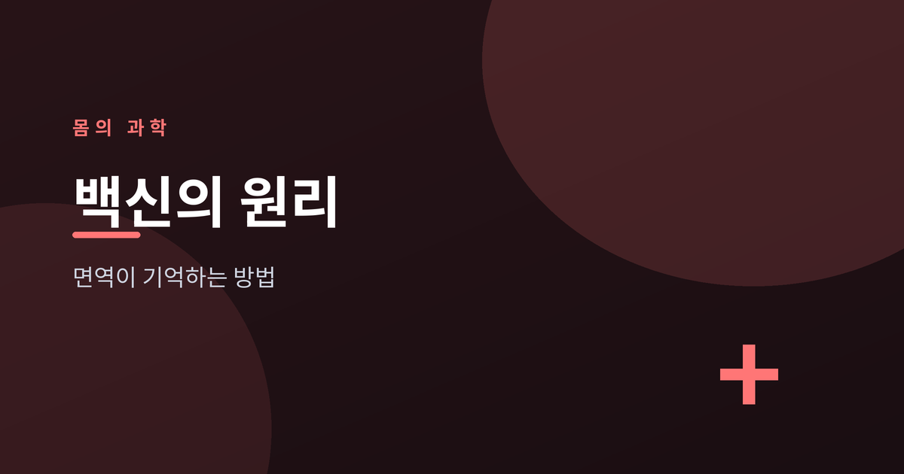
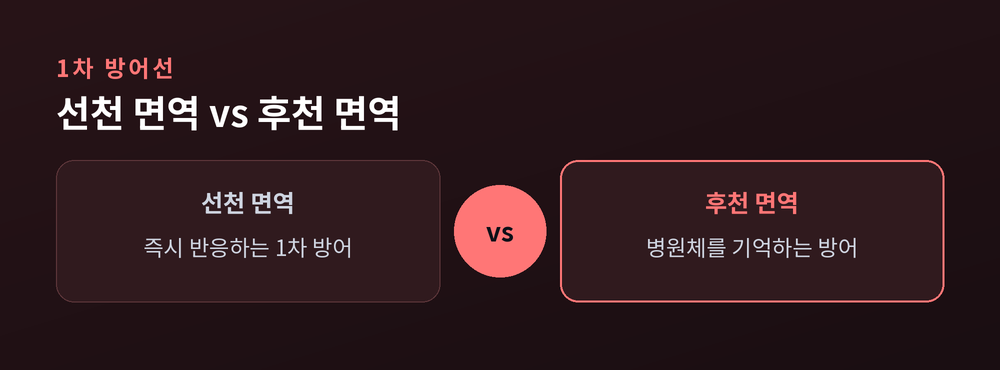
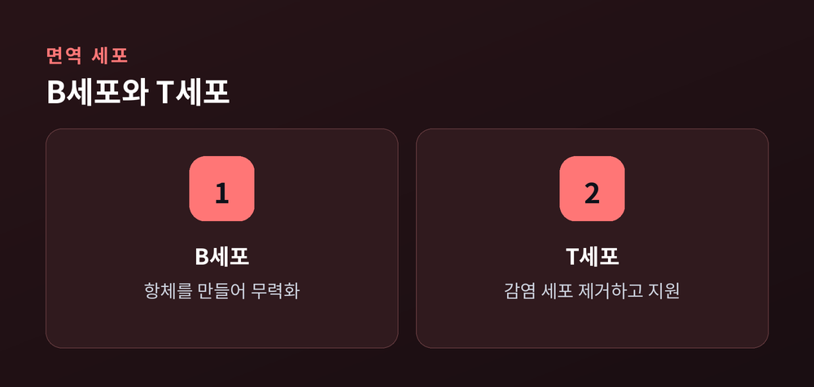
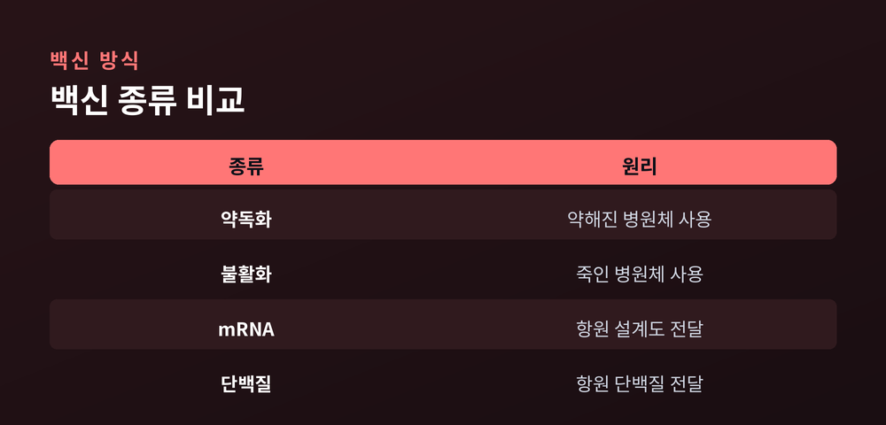

우리 몸은 어떻게 면역을 기억하나

오늘은 백신이 우리 몸속에서 어떤 원리로 작동하는지 이야기해 보려 합니다. 면역 체계의 기본 구조부터 백신의 종류까지 차근히 정리해 보겠습니다.
우리 몸의 방어 체계는 크게 두 층으로 이루어져 있습니다.
선천 면역은 태어날 때부터 갖춘 1차 방어선입니다. 피부, 점막, 백혈구 일부가 침입자를 가리지 않고 즉시 대응합니다.
후천 면역은 다릅니다. 특정 병원체를 인식하고 기억하는 정교한 시스템입니다. 시간은 걸리지만 훨씬 정확합니다.
백신이 작동하는 무대는 바로 이 후천 면역입니다.

병원체 표면의 특징적인 조각을 항원이라 부릅니다. 몸은 이 항원을 이물질로 인식합니다.
B세포는 항원에 맞춰 항체를 만들어냅니다. 항체는 병원체에 달라붙어 무력화하는 단백질입니다.
T세포는 역할이 조금 다릅니다. 이미 감염된 세포를 찾아 제거하거나, B세포의 항체 생산을 돕습니다.

두 세포가 협력해야 면역 반응이 완성됩니다.
면역의 핵심은 기억입니다.
한 번 마주친 항원의 정보는 일부 B세포·T세포에 남습니다. 이를 기억세포라 부릅니다.
같은 병원체가 다시 들어오면, 기억세포는 처음보다 훨씬 빠르고 강하게 반응합니다.
백신은 실제 질병을 앓지 않고도 이 기억을 미리 만들어 두는 방법이라 할 수 있습니다.
백신은 몸에 미리 '연습 상대'를 소개해 주는 셈입니다.
백신은 항원을 몸에 전달하는 방식에 따라 나뉩니다. 아래 표로 정리해 보았습니다.
| 종류 | 원리 |
|---|---|
| 약독화 백신 | 병원성을 낮춘 살아있는 병원체 사용 |
| 불활화 백신 | 죽인 병원체나 조각을 사용 |
| mRNA 백신 | 항원 설계도만 세포에 전달 |
| 단백질 백신 | 항원 단백질 자체를 정제해 전달 |

방식은 다르지만, 목표는 하나입니다. 안전하게 기억세포를 만드는 것입니다.
집단면역은 개인을 넘어선 이야기입니다.
한 집단에서 충분한 비율이 면역을 갖추면, 병원체가 퍼질 통로 자체가 줄어듭니다.
그 결과 면역을 갖추지 못한 사람도 간접적으로 보호받습니다. 다만 필요한 비율은 병원체마다 다르고, 시간이 지나면 면역이 약해질 수도 있습니다. 단순하게만 볼 개념은 아닙니다.
정리하면 이렇습니다.
백신의 원리는 결국 몸이 스스로 기억하도록 돕는 일입니다.
"기억하는 몸이, 다음 위협을 이깁니다."
면역이라는 정교한 시스템을 이해하고 나면, 백신이 왜 그렇게 설계되었는지도 조금은 더 선명해지실 것입니다.